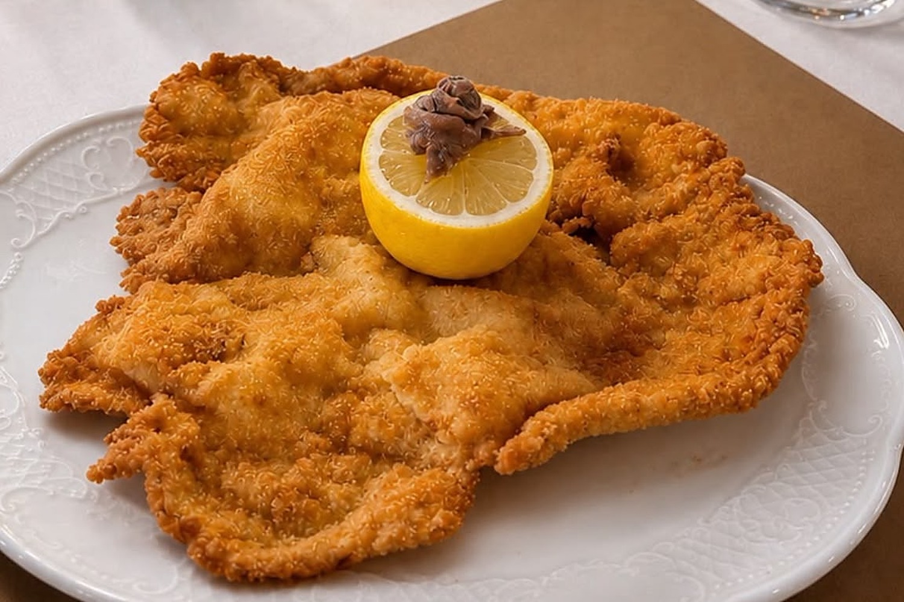
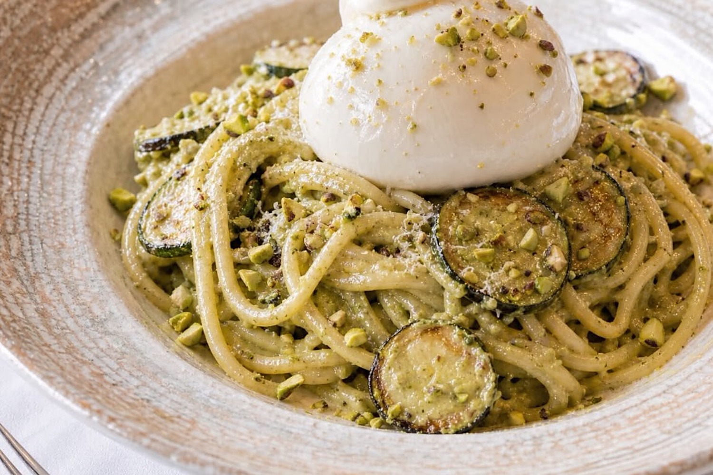
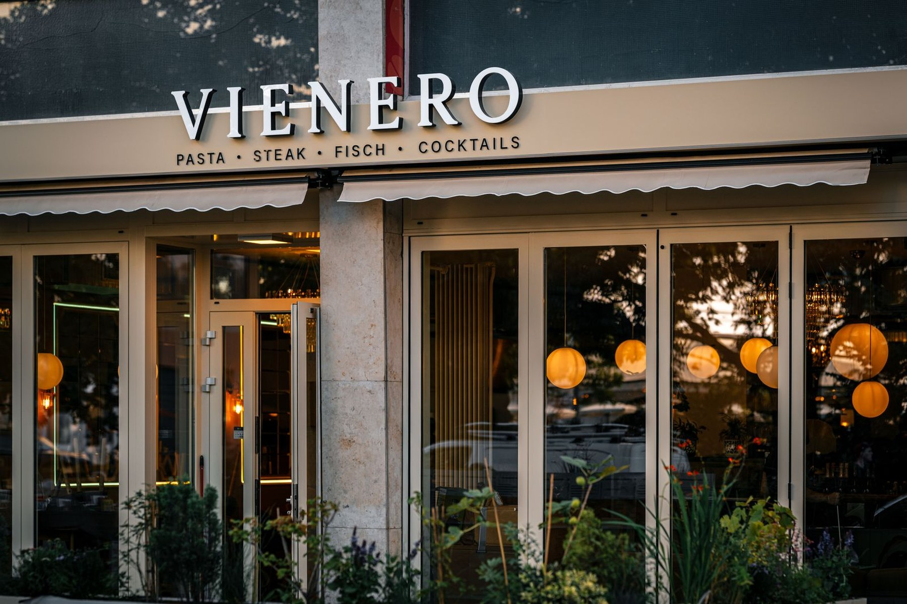
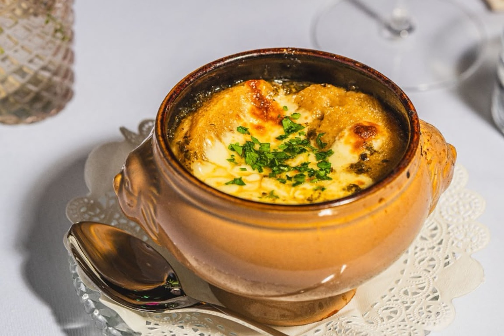
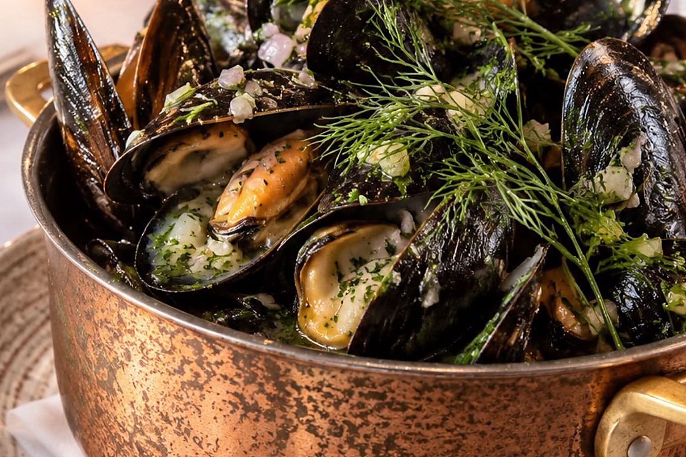
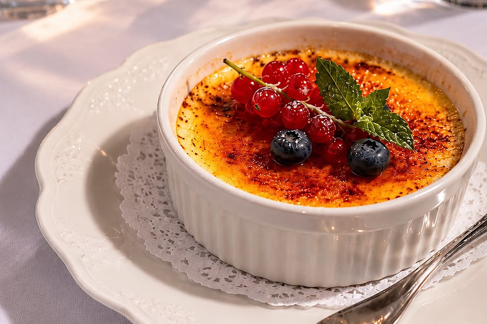

Restaurant beim Stephansdom
Sie suchen ein gutes Restaurant beim Stephansdom, aber keine Touristenfalle? Das VIENERO liegt zehn Gehminuten vom Dom entfernt, die Wollzeile entlang, direkt am Stadtpark an der Ringstraße. Wiener Klassiker treffen das Mittelmeer: Wiener Schnitzel vom Kalb, hausgemachte Pasta mit schwarzem Trüffel, Steak und ganzer Wolfsbarsch vom Grill, dazu Cocktails bis Mitternacht.



So kommen Sie vom Dom zu uns
- Zu Fuß, etwa zehn Minuten: vom Stephansplatz in die Wollzeile, eine der ältesten Einkaufsstraßen Wiens, und geradeaus bis zum Stubenring.
- Mit der U-Bahn: eine Station mit der U3 vom Stephansplatz bis Stubentor, der Ausgang ist direkt vor unserer Tür.
- Gleich gegenüber: der Stadtpark mit dem goldenen Johann Strauss und dem Kursalon.
- Ein paar Schritte weiter: das MAK, Museum für angewandte Kunst, am Stubenring.
Wiener Schnitzel und mehr
Unser Wiener Schnitzel ist vom Kalb, in luftig soufflierter Panade goldbraun gebacken, mit Petersilienkartoffeln und auf Wunsch Preiselbeeren. Dazu servieren wir eine kleine Wiener Auswahl wie Zwiebelsuppe und Weinbergschnecken und viel Mittelmeer: Burrata, Vitello Tonnato, Pasta al Tartufo, Ribeye und Filetsteak, Wolfsbarsch im Ganzen vom Grill.
Mittags ab 12 Uhr gibt es das ganze Menu, im November auch Gansl und Wild. Am Abend sitzen Sie im Gastgarten am Stadtpark oder an der Bar, wo es Signature Cocktails und Weine aus Österreich, Frankreich und Italien bis Mitternacht gibt.



Tisch reservieren
★ 4,4 auf Google · über 1.500 Bewertungen
Für Freitag- und Samstagabend empfehlen wir eine Reservierung.
Lieber telefonisch? 01 913 70 05 · Gruppen ab neun Personen rufen Sie uns bitte an.
Ihr Besuch
Öffnungszeiten
Mo bis Sa 12 bis 24 Uhr
So 17 bis 24 Uhr
Küche bis 22 Uhr
Adresse
Dr.-Karl-Lueger-Platz 3
1010 Wien
U3 Stubentor, am Stadtpark
Google Maps
Reservierung
Fragen und Antworten
Wie weit ist das VIENERO vom Stephansdom entfernt?
Etwa zehn Gehminuten. Vom Stephansplatz gehen Sie die Wollzeile entlang bis zum Stubenring, das VIENERO liegt am Dr.-Karl-Lueger-Platz 3 direkt am Stadtpark.
Gibt es beim Stephansdom ein Wiener Schnitzel vom Kalb?
Ja. Unser Wiener Schnitzel ist vom Kalb, in luftig soufflierter Panade goldbraun gebacken und kommt mit Petersilienkartoffeln, um 29,90 Euro.
Wann hat das VIENERO geöffnet?
Montag bis Samstag 12 bis 24 Uhr, Sonntag 17 bis 24 Uhr, ab 3. Jänner 2027 sonntags 12 bis 23 Uhr. Die Küche ist bis 22 Uhr geöffnet, die Bar bis Mitternacht.
Muss ich reservieren?
Mittags bekommen Sie meist spontan einen Tisch. Für Freitag- und Samstagabend empfehlen wir eine Reservierung, online in einer Minute oder unter 01 913 70 05.
Gibt es ein englisches Menu?
Ja, unser ganzes Menu gibt es auch auf Englisch, ideal wenn Sie mit Gästen aus dem Ausland unterwegs sind.